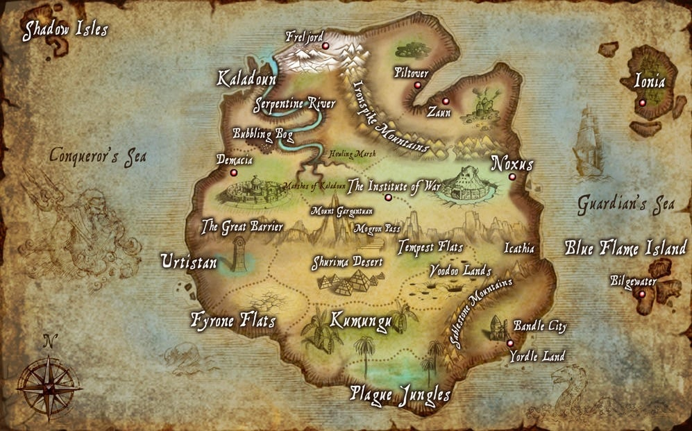

-Voici l'univers De Ionia Entourée de mers capricieuses, Ionia est composée de plusieurs provinces alliées réparties à travers un gigantesque archipel appelé les Terres premières. La culture ionienne s'est développée dans le but de maintenir l'équilibre universel, et par conséquent, la frontière entre le monde matériel et le monde spirituel y est plus perméable, particulièrement dans les montagnes et les forêts sauvages. Bien que la magie de ces terres soit imprévisible et que les créatures y soient dangereuses et féeriques, la plupart des Ioniens ont vécu dans la paix et la prospérité pendant des siècles. Les moines guerriers, les milices provinciales et Ionia elle-même ont suffi à les protéger. Mais tout a basculé il y a douze ans, lorsque Noxus a attaqué les Terres premières. Les assauts incessants des forces impériales ravagèrent Ionia pendant de nombreuses années avant d'être vaincues, et le prix de la victoire fut terrible.
-Voici l'univers de Noxus: Noxus est un puissant empire à la réputation terrifiante. Pour les étrangers qui vivent hors de ses frontières, il s'agit d'un pays brutal, expansionniste et agressif, mais ceux qui observent au-delà de cette façade belliqueuse découvrent une société ouverte, où la force et les talents du peuple sont valorisés et cultivés. Les Noxiis formaient autrefois un groupe de redoutables tribus barbares, jusqu'à ce qu'ils prennent d'assaut et s'installent dans l'ancienne cité qui constitue aujourd'hui le cœur de leur empire. Menacés de toutes parts, ils sont allés au-devant de leurs ennemis pour combattre, repoussant leurs frontières plus loin chaque année. Cette lutte pour la survie a fait des Noxiens modernes un peuple fier pour qui la force prime sur tout le reste, bien que cette force puisse s'exprimer de différentes façons.

Voici d'autre univers en plus des 4 explique 
-Voici l'univers De fredjord: reljord est une terre inhospitalière et hostile dont les habitants sont des guerriers-nés, contraints de persévérer envers et contre tout. Aussi fières qu'elles sont outrageusement indépendantes, les tribus de Freljord sont souvent considérées comme barbares et sauvages par leurs voisins de Valoran, lesquels ignorent les traditions ancestrales qui les ont façonnées. Il y a plusieurs milliers d'années, l'alliance entre les sœurs Avarosa, Serylda et Lissandra fut brisée lorsqu'une guerre menaça de ravager tout Runeterra à son insu, ce qui plongea les territoires du nord dans le chaos d'un hiver quasi permanent. De nos jours, seuls les mortels exceptionnels qui semblent immunisés contre les ravages du feu ou de la glace sont destinés, ou tout du moins capables de gouverner. Malgré les efforts des Gardiens du givre, nombre de mythes et légendes relatent encore les récits des dieux anciens, yétis étranges et autres Gardiens des esprits. Les maraudeurs de la Griffe hivernale s'aventurent chaque année un peu plus loin, tourmentant Demacia au sud et Noxus à l'est. Finalement, en quête d'une destinée meilleure, les tribus indépendantes et irascibles ont commencé l'une après l'autre à accorder leur allégeance à Ashe, la jeune reine des Avarosans.

-Voici l'univers de bilgewater: Bilgewater peut être le lieu d'un nouveau départ, car nul ici ne vous questionne sur votre passé. Pourtant, chaque matin, on retrouve dans les eaux du port des cadavres de voyageurs, la bourse vide et la gorge tranchée… Bien que Bilgewater soit une cité dangereuse, elle regorge d'opportunités pour les aventuriers sans scrupule que limitent d'ordinaire les lois et les régulations commerciales. Si vous avez de l'argent, vous pouvez acheter n'importe quoi ici, des technologies Hextech illégales aux faveurs des seigneurs du crime organisé.